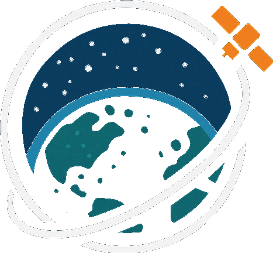

KesslerSIMDrome
About
KesslerSimDrome is an interactive simulation platform designed to visualize and analyze low-Earth orbit (LEO) space debris. It addresses the growing concern of space debris and the Kessler Syndrome, where cascading collisions could render certain orbits unusable. Current tools for space debris visualization often struggle with real-time performance, intuitive interfaces, and comprehensive data integration, making them less accessible to the general public.
KesslerSimDrome overcomes these barriers by providing real-time simulations with features such as time scaling, debris filtering, and detailed object information. Users can explore the orbital environment, understand the dynamics of space debris, and witness the potential consequences of collisions in an engaging, educational format.
This project serves as both an educational tool and a platform for raising awareness about the importance of space sustainability and debris mitigation efforts. Target users for this project include students, educators, space enthusiasts, and the general public.
It was build using CesiumJS, Python, Rust, and PostgreSQL and is hosted on AWS and GitHub Pages.
Full Tutorial
youtu.be/tzDALBdwcJcQuick Reference
- Move camera: Click and drag to rotate the view, scroll to zoom in/out, right-click and drag to pan.
- Time controls: Use the timeline/animation widgets to scrub orbit time.
- Change speed: Drag the speed slider (bottom-left). Double-click the clock to type an exact speed.
- Filters: Click the filter icon in the toolbar to show/hide objects by Type, and Country
- Altitude Filters: Use checkboxes in the altitude legend(top-left) to filter objects by altitude range.
- Limit objects: Use the Object Count slider(in the filter menu) to cap visible entities for performance.
- Search (NORMAL mode): Use the floating search box to find a satellite by name or ID and zoom to it.
- Kessler Simulation: Click the Kessler button to enter live mode. Time UI hides; simulation stats appear.
- Reset View: Click the home icon in the toolbar to reset the camera to the default view.
- Object Info: Click on any object to view detailed information such as name, type, country of origin, altitude, and velocity.
Tip: If objects “disappear,” check your filters and the Object Count slider.
Important Terminology
LEO (Low Earth Orbit): Typically 160 km to 2,000 km above Earth.
GEO (Geosynchronous Orbit): Orbit with period matching Earth’s rotation.
Kessler Syndrome: Cascading collisions generating more debris, increasing future collision risk.
Rocket Body: Spent upper stage rocket/booster; high collision risk.
Sources
CelesTrak: Used for satellite data. https://celestrak.org/
NASA Models: Used several public 3D models. https://science.nasa.gov/3d-resources/
Team Members
Rishab Dixit
Rishab is a senior at the University of Utah pursuing a Bachelor of Science in Computer Science. He is primarily interested in designing and building hardware for machine learning, and he plans to continue his studies at Texas A&M University in a master’s program in Computer Science and Engineering. His contributions to KesslerSimDrome include API development, chatbot integration, and supporting teammates across different parts of the project. These contributions aligned with his interest in building efficient and reliable systems that improve how users interact with software. Outside of school, he enjoys playing video games and badminton.
Phuc "Roy" Hoang
Roy is a senior at the University of Utah pursuing a Bachelor of Science in Computer Science. He is interested in software development, system performance, and building interactive applications. His contributions to KesslerSimDrome include frontend development using CesiumJS, implementing real-time satellite visualization, optimizing rendering performance, and developing features such as filtering and simulation controls. These contributions align with his goal of creating efficient and responsive user experiences in complex systems. Outside of school, he enjoys gaming, working on personal projects, and exploring new technologies.

Samuel Dutson
Sam is a computer science student at the University of Utah. He loves running, hiking, and spending time outdoors.
Will Jackson
Will is a senior at the University of Utah persuing a Bachelors of Science in Computer Science with a minor in French. He is primarily interested in Web Developement and Dev Ops, and hopes to work in one of these areas. His contributions to KesslerSimDrome include API work, hosting setup, and CI/CD pipeline creation. These contributions aligned with his goal of creating key project infrastructure enabling the team to easily deploy new features to the application.
Outside of school he enjoys watching and playing ice hockey, hiking, and working on personal projects.